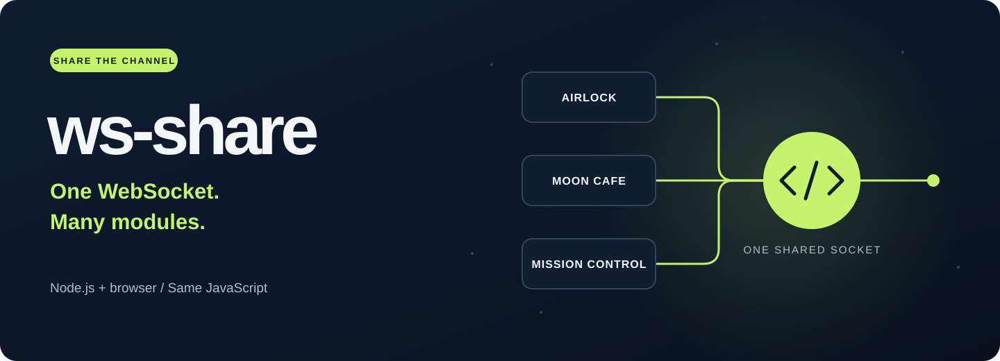

Let your modules share the connection.
Your airlock controls and moon cafe can use the same native WebSocket. Each module asks for the connection it needs, and ws-share reuses the matching socket.
Modules requesting the same URI and protocols receive the same socket.
Keep send, close and native events, with convenient on and off aliases.
Observe connections through one shared event-pubsub bus, loaded only when you call WS.observe().
Two modules. One socket.
npm install ws-shareReplace the example address with your application's WebSocket server.
import WS from 'ws-share';
const airlock = new WS('wss://moon.example/control');
const cafe = new WS('wss://moon.example/control');
console.log(airlock === cafe); // true
function receiveOrder(event) {
console.log('Moon cafe:', event.data);
}
cafe.on('message', receiveOrder);
function orderCoffee() {
airlock.send('One espresso. Low gravity. Extra lid.');
}
if (airlock.readyState === WebSocket.OPEN) {
orderCoffee();
} else {
airlock.on(
'open',
orderCoffee,
{once: true}
);
}A shared socket may already be open when a module asks for it. Check readyState before waiting for open.
CommonJS
const WS = require('ws-share');Node.js 22.13 and newer load the same synchronous WS.js implementation through import and require. Both receive the same constructor and share the same connection pool.
The package installs event-pubsub 6.1.1 and its runtime dependency strong-type 2.0.0. Those modules load only for observation; construction and ordinary socket use remain synchronous. vanilla-test is used only for repository development tests.
Load JavaScript directly.
A native import map resolves the package name to the installed source. Serve your page over HTTP(S) and expose that file at the mapped URL.
<script type="importmap">
{
"imports": {
"ws-share": "./node_modules/ws-share/WS.js"
}
}
</script>
<script type="module">
import WS from 'ws-share';
const socket = new WS('wss://moon.example/control');
function receiveMessage(event) {
console.log(event.data);
}
socket.on('message', receiveMessage);
</script>Import-map URLs are relative to the HTML document. You can also import WS.js directly by URL or let a bundler resolve the ordinary ws-share package import. Browsers and workers need a native globalThis.WebSocket.
Classic scripts
<script src="./node_modules/ws-share/ws-share-vanilla.js"></script>
<script>
const socket = new WS('wss://moon.example/control');
</script>The classic entry exposes globalThis.WS and is generated from the same canonical source. Choose one loading style for each application; classic scripts and ES modules have independent pools. The package uses native JavaScript without webpack or a separate Node bundle.
Enable browser observation
For WS.observe(), add the dependency mappings before loading your scripts. Map the packages to their actual served locations; this example uses a node_modules directory beside the page.
<script type="importmap">
{
"imports": {
"ws-share": "./node_modules/ws-share/WS.js",
"event-pubsub": "./node_modules/event-pubsub/index.js",
"strong-type": "./node_modules/strong-type/index.js"
}
}
</script>
<script type="module">
import WS from 'ws-share';
const events = await WS.observe();
function showAirlockState(type, connection) {
console.log('Moon airlock:', type, connection.id, connection.readyState);
}
events.on('*', showAirlockState);
console.table(WS.getConnections());
const airlock = new WS('wss://moon.example/control');
</script>The same dependency mappings apply to direct-URL imports and the classic script. After that import map and ws-share-vanilla.js have loaded, classic scripts can await observation inside an async function:
async function watchAirlock() {
const events = await WS.observe();
function showAirlockState(type, connection) {
console.log('Moon airlock:', type, connection.id, connection.readyState);
}
events.on('*', showAirlockState);
console.table(WS.getConnections());
const airlock = new WS('wss://moon.example/control');
}
function reportObservationError(error) {
console.error(error);
}
watchAirlock().catch(reportObservationError);WS.observe() rejects when its dependency import fails. Node resolves installed packages normally. Browser documents use the import map above or a bundler; workers need an equivalent module-resolution setup from their host or bundler.
A small layer over WebSocket.
new WS(uri, protocols?) returns the shared native WebSocket itself. The second argument is a protocol string or an iterable of strings, such as an ordered array. A missing URI throws a TypeError; the native constructor handles URL and protocol errors.
| Member | Behavior |
|---|---|
uri |
Read-only URI supplied when this socket was created. |
protocols |
Read-only property containing the originally requested protocols. Native protocol reports the negotiated protocol. |
on(type, listener, options?)addListener(type, listener, options?) |
Aliases for addEventListener. Listeners receive native event objects; messages expose event.data. Returns undefined. |
off(type, listener, options?)removeListener(type, listener, options?) |
Aliases for removeEventListener. Pass the same listener reference to remove it. Returns undefined. |
send(data), close(code?, reason?) |
Native WebSocket operations on the connection shared by every holder. |
readyState, bufferedAmount, binaryType, url, protocol, extensions |
Native WebSocket state and configuration. |
Static observation methods
| Method | Behavior |
|---|---|
await WS.observe() |
Load the observer dependency and resolve the one shared EventPubSub instance for this loaded implementation. Repeated and concurrent calls resolve the same instance. |
WS.getConnections() |
Return a fresh array of current connection records synchronously. Available before observation is enabled. |
Shared ownership
Every module receives the same socket object. Calling close() closes the connection for all of them. Setting binaryType changes how all listeners receive binary messages. The application decides which owner closes a connection.
When a component goes away, remove its listener while other components keep using the socket:
function showCafeMessage(event) {
console.log(event.data);
}
socket.on('message', showCafeMessage);
// Run during this component's cleanup.
socket.off('message', showCafeMessage);Use event listeners when modules need independent handlers. Assigning socket.onmessage replaces the socket's single property handler.
Give Mission Control the current picture.
Subscribe first, then take a snapshot without an await between those two operations. The snapshot supplies current state; subscriptions supply subsequent lifecycle events.
A socket can appear in the snapshot before its queued created event arrives. Maintain connection lists by id so that notification updates the existing entry.
import WS from 'ws-share';
const events = await WS.observe();
function showAirlockState(type, connection) {
console.log('Moon airlock:', type, connection.id, connection.readyState);
}
events.on('*', showAirlockState);
console.table(WS.getConnections());
const airlock = new WS('wss://moon.example/control');
// Run when this observer's component goes away.
function stopWatchingAirlock() {
events.off('*', showAirlockState);
}The wildcard handler receives (type, connection). A handler for one event receives only connection. Use events.once('open', handler) for the next opening across this implementation, or events.on('close', handler) for every close. Remove the exact handler with events.off(type, handler).
The bus is shared by all observers. events.reset() removes every observer's subscriptions, so component cleanup should use off().
Connection records
| Field | Meaning |
|---|---|
id |
Increasing numeric identity assigned once per physical connection during this implementation's lifetime. A replacement receives a new ID. |
socket |
The exact native WebSocket returned by new WS(...). |
url |
The native socket's url, including any URL context supplied by the application. |
protocols |
A fresh array of requested protocol strings in their original order. Native socket.protocol reports the negotiated value. |
readyState |
Native numeric state when this record was created: 0 connecting, 1 open, 2 closing, or 3 closed. |
The snapshot array and records are fresh, shallow copies, with a copied protocol array for each record. The referenced native socket remains live. A connection remains tracked until its native close event, including an older closing socket after a replacement is created. Closed history is not retained.
Events and timing
Each event payload contains the snapshot fields above plus event.
| Event | Timing and native event |
|---|---|
created |
Queued as a microtask after a new native connection is constructed; runs after the constructor returns. Observation must already be enabled at construction. event is undefined. |
open |
When the native socket opens. event is the original native open event. |
error |
When the native socket reports an error. event is the original native error event; available details depend on the platform. |
close |
After the native socket closes and tracking/cache cleanup finishes. event is the original native close event with code, reason, and wasClean. |
Enabling observation does not replay earlier events. Reusing a connecting or open socket emits no extra created or open. An older replaced socket still emits its own close, and its cleanup preserves the replacement. A new snapshot taken inside a close handler excludes the connection that just closed.
Handlers run synchronously through event-pubsub. Handle failures inside your observer when other observers must keep running: a thrown handler stops the remaining handlers for that emission, and returned promises are not awaited. Created handlers run after construction returns; native lifecycle handler failures follow the platform's event-error reporting.
Observation uses one bus for the loaded implementation and preserves each socket's native listener aliases. ws-share does not log, persist, or redact records. URLs can carry private application context, and the application owns their handling. Message handling, heartbeat, reconnection, reference counting, routing, and delivery guarantees remain application or transport responsibilities.
The observer can report only events the runtime delivers while its realm is running. It cannot supply a missing native close event or notify after the page, worker, or process has ended.
Upgrading to 3.1.
Version 3.1.0 adds static observation methods while preserving construction, connection reuse, and native socket behavior. Existing socket-only browser code keeps its imports. Browser code adopting WS.observe() also needs the dependency mappings shown above.
From 2.x
Version 3.0.0 replaced the Node ws implementation with the platform's native WebSocket. The standard WebSocket API now applies in every supported environment.
- Runtime: use Node.js 22.13 or newer, or a browser or worker with native
WebSocket. - Messages: Node listeners now receive a
MessageEvent; readevent.data. Native close events exposeevent.codeandevent.reason. - Binary data: native
binaryTypecontrols the message data. Setsocket.binaryType = 'arraybuffer'when your handler needs anArrayBuffer, and update code that expected a NodeBuffer. - Listeners:
on,off,addListenerandremoveListenerfollow EventTarget semantics, including options such as{ once: true }and anundefinedreturn value. - Node extensions:
ws-specific methods such asping,pong,terminateand EventEmitter methods are outside the native WebSocket API. Use the standard client API when upgrading. - Loading: existing
require('ws-share')and classic browserWSusage remain available. ESM imports load the canonical source directly.
Less repeated work
Connection reuse avoids opening another WebSocket for each module. Shared sockets retain their established listener aliases and metadata. Connection lookup distinguishes URI and protocol boundaries and replaces closing connections cleanly.
See the release notes for release history and verification evidence.